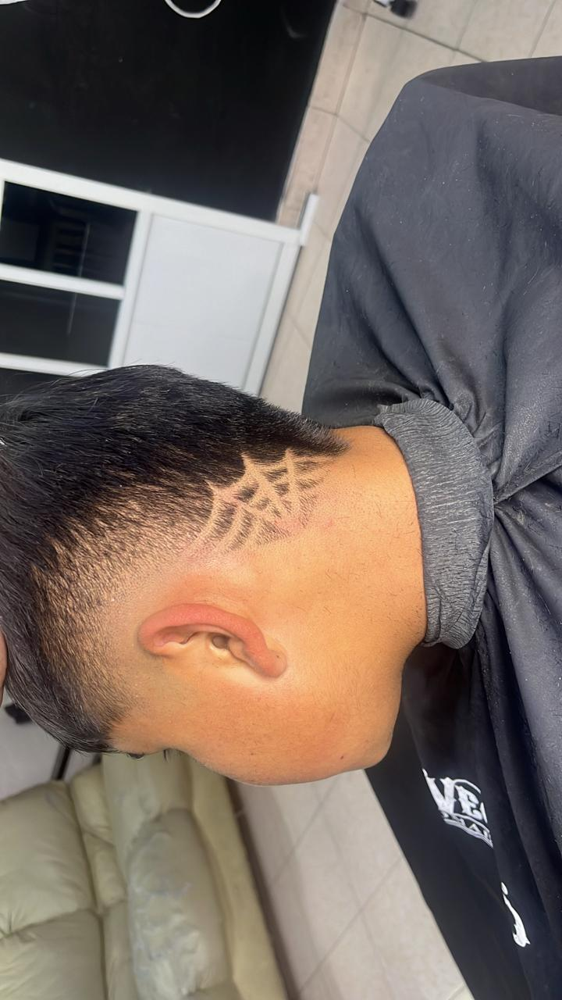

| Título | VIDEO | Descripción |
|---|---|---|
| TAPER FADE | El taper fade es un estilo de corte de cabello que combina un desvanecimiento gradual con un corte en el que se mantiene un poco de longitud en los laterales y la parte posterior | |
| DESVANECIDO EN V | El corte en V es un estilo de corte de cabello que se caracteriza por tener la parte posterior del cabello cortada en forma de "V". | |
| MULLET |  | El mullet es un estilo de corte de cabello que ha sido popular en varias décadas y se caracteriza por su forma distintiva. Es conocido por tener una apariencia de "más largo en la parte posterior |